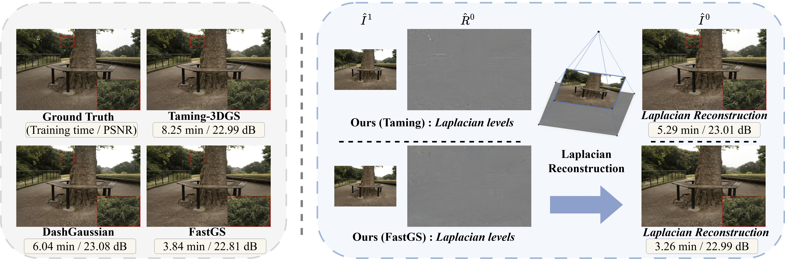

Laplacian Frequency Hierarchies for Efficient 3D Gaussian Splatting Training
A plug-and-play frequency-staged training scheme for accelerating 3DGS backbones such as FastGS and Taming-3DGS.

Abstract
A key bottleneck in 3D Gaussian Splatting training is the continual growth of Gaussian primitives, which increases optimization cost and slows convergence, especially at high resolutions.
We propose Laplacian Frequency Hierarchies, a simple yet efficient 3DGS scheme that combines Laplacian image decomposition with coarse-to-fine, frequency-staged training. After fitting lower-frequency structure, we archive the corresponding Gaussian field so that subsequent fields can optimize higher-frequency residuals without carrying the full primitive burden, and we compose the rendered components in the image domain via a Laplacian-style reconstruction at inference time.
This design reduces the number of active Gaussians during training, lowering optimization overhead and accelerating training. The proposed scheme is plug-and-play and orthogonal to prior 3DGS accelerations: it can be directly combined with strong backbones such as Taming-3DGS and FastGS to improve training speed with competitive reconstruction quality.
Method
Laplacian-GS decomposes supervision into frequency bands and optimizes a separate Gaussian field for each stage.
1. Decompose
Build a Laplacian image hierarchy from each training view, separating low-frequency structure from high-frequency residuals.
2. Train & Archive
Fit a Gaussian field for the current frequency stage, archive it, then initialize the next stage without carrying all previous primitives.
3. Reconstruct
Render archived stage fields and compose them in image space to recover the final full-frequency prediction.
Demo
Results
The released scripts reproduce the Mip-NeRF 360 1K setting with FastGS and Taming-3DGS backbones.
| Backbone | Script | Setting |
|---|---|---|
| FastGS | run_mipnerf360_1k_fastgs.sh |
Mip-NeRF 360, 1K/1.6K resize convention |
| Taming-3DGS | run_mipnerf360_1k_taming.sh |
Mip-NeRF 360, 1K/1.6K resize convention |